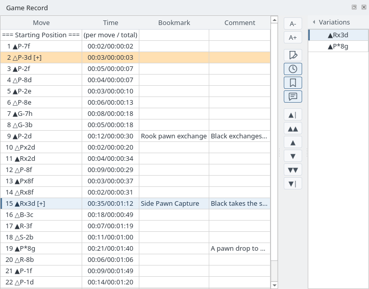
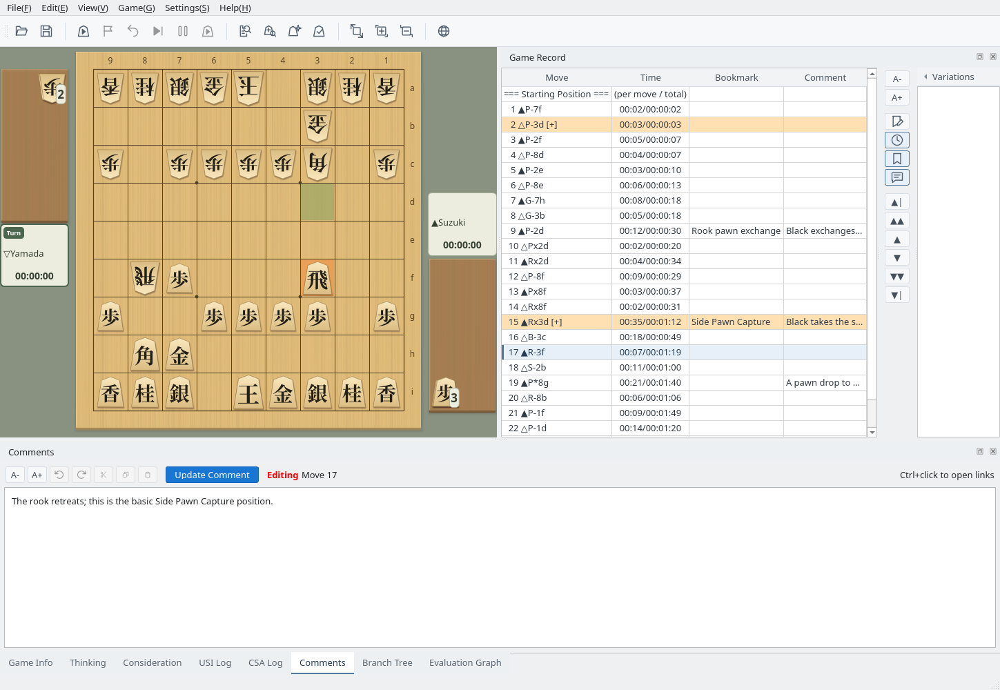
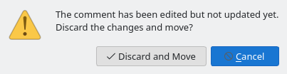
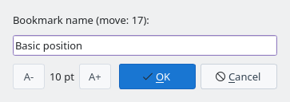
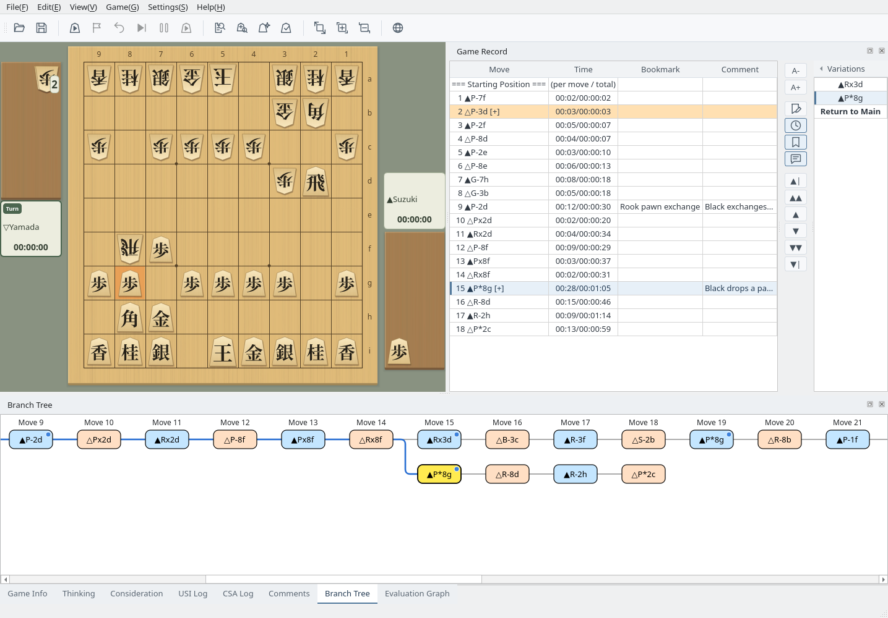
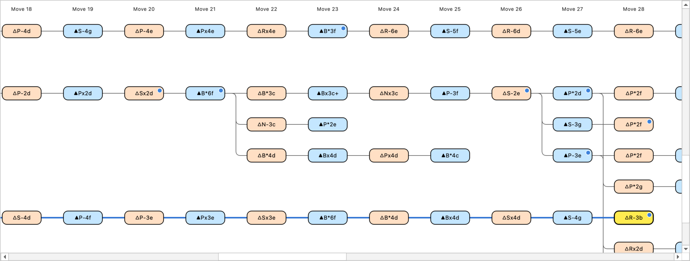

Moves, comments, bookmarks and variations in the game record pane
Screenshots were captured on Linux with the English interface.
Moves, time, bookmarks and comments at a glance
The Game Record pane lists the moves from the starting position with their time (per move / total), bookmark and comment. When you select a move, its position appears on the board, and the Comments and Branch Tree tabs follow the same move. Select a move by clicking its row, with the Up and Down keys, or with the buttons on the right.
Moves that have variations get an orange background and “[+]” after the move. The Variations list on the far right shows the alternatives when the selected move has any (click “◂ Variations” to collapse it).
Switch the notation of moves and board coordinates between Japanese (▲７六歩) and Western (▲P-7f) in Settings → Move notation and board coordinates. By default it follows the UI language (Japanese and Chinese use Japanese notation, English uses Western notation). See the Language Support guide for details.

Game Record: the Time, Bookmark and Comment columns and the variations at move 15
Write a comment for the selected move
The Comments tab at the bottom shows the comment of the selected move. When you change it, “Editing” appears; click Update Comment (Ctrl+Enter) to apply it to the game record. Applied comments also appear in the Comment column.
URLs in comments become links that open with Ctrl+click. The buttons on the left change the font size and provide undo, redo, cut, copy and paste. Comments are saved in KIF, KI2, CSA and JKF files.

Comments: the comment of move 17 being edited (Editing)
If you try to move to another move without clicking Update Comment, a confirmation appears. Discard and Move throws away the edit and moves; Cancel stays on the current move. This applies to clicking the game record, the buttons, the Variations list and the branch tree alike.

Unapplied comment
Name the moves you want to find again
Select a move, click the Edit Bookmark button, enter a name and click OK; it appears in the Bookmark column. Clicking OK with an empty name removes the bookmark.
Bookmarks are saved in KIF and KI2 files and shown again when the file is loaded.

Edit Bookmark
Switch between alternative lines
When you select a move that has variations, the Variations list shows the main-line move and the alternatives. Click one to switch to that line; the game record then shows the variation. While a variation is displayed, Return to Main at the end of the list goes back to the same move number in the main line.
The Branch Tree tab shows the main line (top row) and every variation. The current move is yellow, and clicking a move goes to that position. When the current move is outside the visible area, the tree scrolls to show it. For the file formats that keep variations, see the Kifu Management guide.

Variations: ▲P*8g chosen at move 15 with the Branch Tree tab shown
The branch tree packs variations into free rows. Variations that start from the same move are joined by a vertical line, and the line from the starting position to the current move is drawn in blue. Turn off Compact layout in the right-click menu to give every variation its own row.
The “Move n” headers at the top stay visible when you scroll vertically. Moves with a comment have a blue dot in the top-right corner, and hovering over a move shows the move and the beginning of its comment.
Right-click a move in a variation and choose Collapse this variation to keep only its first move and hide the rest of the line and the variations that branch from it; the number of hidden moves is shown as “▸ +n”. Double-click the first move or choose Expand this variation to show it again (Expand all variations is also available). Going to a hidden move expands it automatically.
After clicking the branch tree, use Left and Right to step through the moves, Up and Down to go to the move above or below at the same move number, and Home and End to go to the starting position or the last move of the line. Change the size with Ctrl+wheel (⌘+wheel on macOS), a trackpad pinch, or Zoom in, Zoom out and Actual size (100%) in the right-click menu. The size and the layout setting are kept for next time.

Branch tree: variations packed into free rows, the path to the current move in blue, and blue dots on moves with comments
Right-click a move in the branch tree or in the Variations list for these operations. Editing marks the game record as unsaved. They are not available during a game.
| Menu | Action |
|---|---|
| Make this line the main line | Makes the line from the starting position to that move the main line |
| Move variation up / Move variation down | Changes the order of the variations that start from the same move (the top one is on the main-line side) |
| Delete from this move… | Deletes the move, the rest of its line and the variations that branch from it (after a confirmation; this cannot be undone) |
When no game is in progress, moving a piece on the board records the move as the next move after the one shown. If the same move already exists, it simply goes to that move; otherwise it becomes a new variation. You are asked whether to promote. When a game-ending move such as a resignation is shown, the move is played from the position just before it.
The Play button in the Joseki window records moves the same way. Added moves are saved like any other variation.